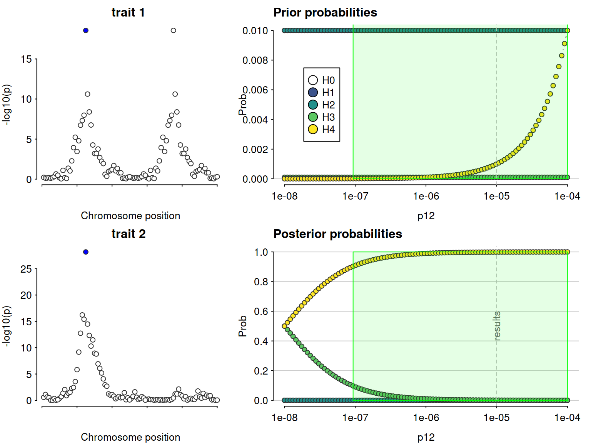
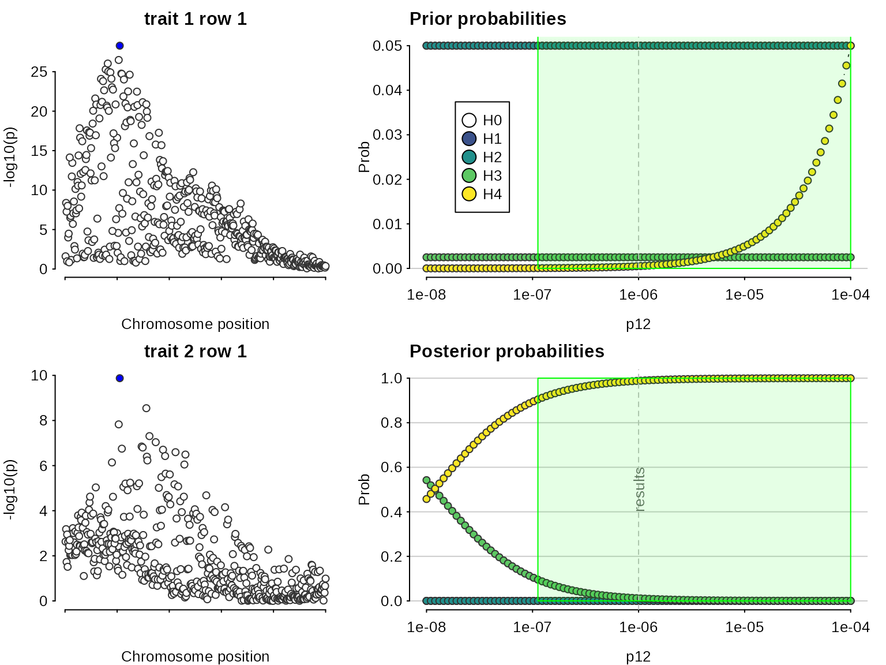
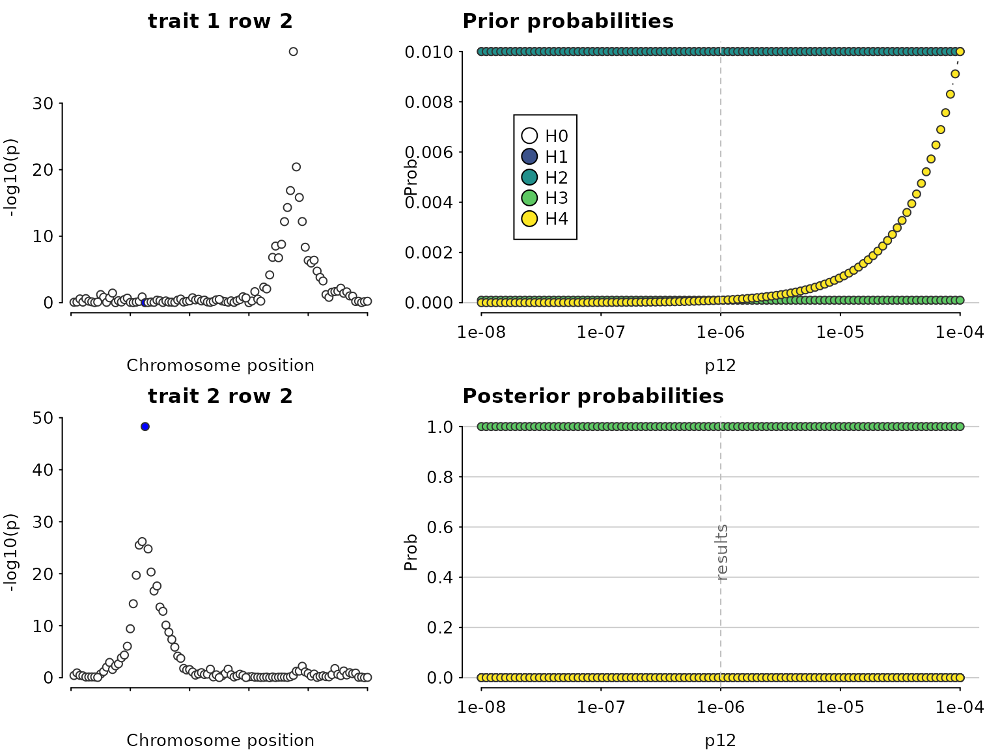
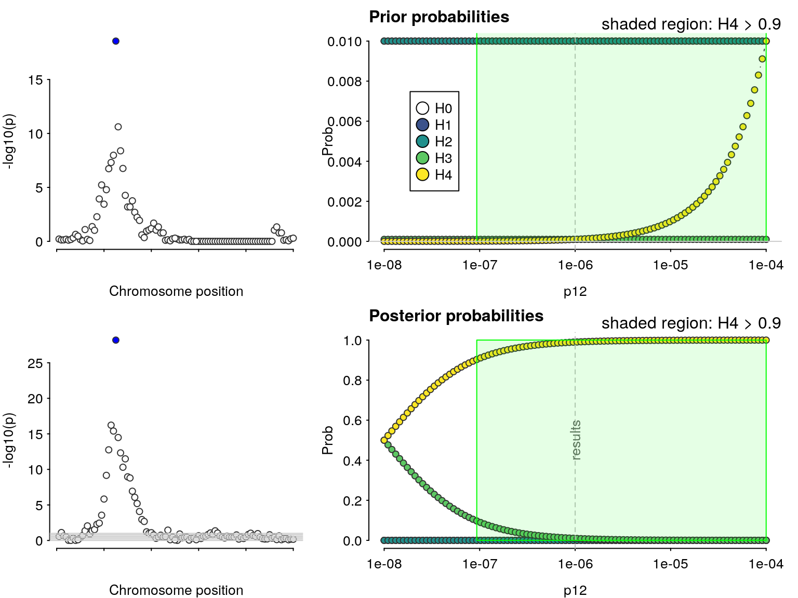
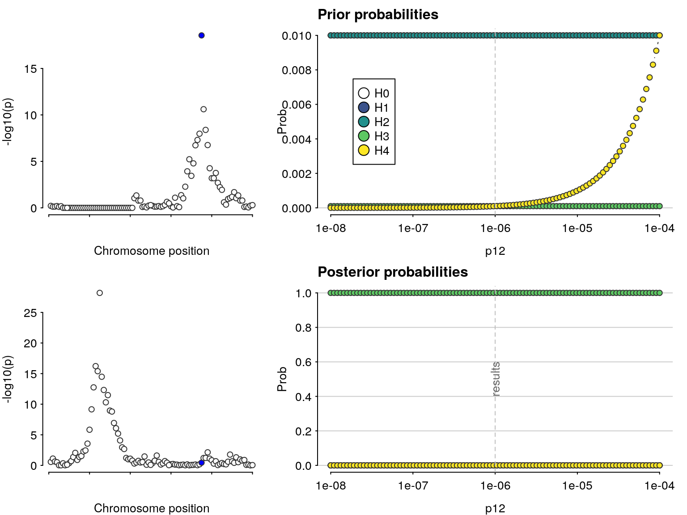

vignettes/a05_conditioning.Rmd
a05_conditioning.Rmd% % % ## Simulate a small dataset
library(mvtnorm)
simx <- function(nsnps,nsamples,S,maf=0.1) {
mu <- rep(0,nsnps)
rawvars <- rmvnorm(n=nsamples, mean=mu, sigma=S)
pvars <- pnorm(rawvars)
x <- qbinom(1-pvars, 2, maf)
}
sim.data <- function(nsnps=50,nsamples=200,causals=floor(nsnps/2),nsim=1) {
cat("Generate",nsim,"small sets of data\n")
ntotal <- nsnps * nsamples * nsim
S <- (1 - (abs(outer(1:nsnps,1:nsnps,`-`))/nsnps))^4
X1 <- simx(nsnps,ntotal,S)
X2 <- simx(nsnps,ntotal,S)
Y1 <- rnorm(ntotal,rowSums(X1[,causals,drop=FALSE]/2),2)
Y2 <- rnorm(ntotal,rowSums(X2[,causals,drop=FALSE]/2),2)
colnames(X1) <- colnames(X2) <- paste("s",1:nsnps,sep="")
df1 <- cbind(Y=Y1,X1)
df2 <- cbind(Y=Y2,X2)
if(nsim==1) {
return(new("simdata",
df1=as.data.frame(df1),
df2=as.data.frame(df2)))
} else {
index <- split(1:(nsamples * nsim), rep(1:nsim, nsamples))
objects <- lapply(index, function(i) new("simdata", df1=as.data.frame(df1[i,]),
df2=as.data.frame(df2[i,])))
return(objects)
}
}
set.seed(46411)
data <- sim.data()## Generate 1 small sets of dataFirst, we use the above-simulated data (which contains a single colocalising variant) as a template to generate an additional set of SNPs within which one variant is causal for only one of the two traits.
Y1 <- data@df1$Y
Y2 <- data@df2$Y
Y3 <- sample(data@df2$Y) # Y3 is unassociated with anything in X2
X1 <- as.matrix(data@df1[,-1])
X2 <- as.matrix(data@df2[,-1])
tests1 <- lapply(1:ncol(X1), function(i) summary(lm(Y1 ~ X1[,i]))$coefficients[2,])
tests2 <- lapply(1:ncol(X2), function(i) summary(lm(Y2 ~ X2[,i]))$coefficients[2,])
tests3 <- lapply(1:ncol(X2), function(i) summary(lm(Y3 ~ X2[,i]))$coefficients[2,])
p1 <- sapply(tests1,"[",4)
p2 <- sapply(tests2,"[",4)
p3 <- sapply(tests3,"[",4)
# we are going to double the number of SNPs so that Y1 has a causal
# variant in each block (tests1, duplicated) and Y2 has a shared
# causal variant in block 1 only (tests2) and not block 2 (tests3)
snpnames=make.unique(rep(colnames(X2),2))
maf <- rep(colMeans(X2)/2,2)
names(maf) <- snpnames
LD0 <- LD1 <- cor(X2)
nsnp=ncol(X2)
dimnames(LD1)=list(snpnames[-c(1:nsnp)],snpnames[-c(1:nsnp)])
LD01=matrix(0,nsnp,nsnp,dimnames=list(snpnames[1:nsnp],snpnames[-c(1:nsnp)]))
LD10=matrix(0,nsnp,nsnp,dimnames=list(snpnames[-c(1:nsnp)],snpnames[1:nsnp]))
LD <- rbind(cbind(LD0,LD01), cbind(LD10, LD1))
get.beta <- function(x,nm) {
beta <- sapply(x,"[",1)
varbeta <- sapply(x, "[", 2)^2
names(beta) <- names(varbeta) <- colnames(LD)
return(list(beta=beta,varbeta=varbeta))
}
b1 <- get.beta(c(tests1,tests1),colnames(LD))
b2 <- get.beta(c(tests2,tests3),colnames(LD))First, let us do a standard coloc (single causal variant) analysis to serve as a baseline comparison. The analysis concludes there is colocalisation, because it “sees” the SNPs on the left which are strongly associated with both traits. But it misses the SNPs on the right of the top left plot which are associated with only one trait.
library(coloc)
D1 <- list(beta=b1$beta,
varbeta=b1$varbeta,
N=nrow(X1),
sdY=sd(Y1),
type="quant",
MAF=maf,
LD=LD,
snp=names(b1$beta),
position=1:length(b1$beta))
D2 <- list(beta=b2$beta,
varbeta=b2$varbeta,
N=nrow(X2),
sdY=sd(Y2),
type="quant",
MAF=maf,
LD=LD,
snp=names(b2$beta),
position=1:length(b1$beta))
my.res <- coloc.abf(dataset1=D1, dataset2=D2)## PP.H0.abf PP.H1.abf PP.H2.abf PP.H3.abf PP.H4.abf
## 1.41e-37 5.17e-25 5.46e-16 9.99e-04 9.99e-01
## [1] "PP abf for shared variant: 99.9%"my.res## $summary
## nsnps PP.H0.abf PP.H1.abf PP.H2.abf PP.H3.abf
## 1.000000e+02 1.411672e-37 5.165774e-25 5.460023e-16 9.990010e-04
## PP.H4.abf
## 9.990010e-01
##
## $results
## snp position V.df1 z.df1 r.df1 lABF.df1
## 1 s1 1 0.002248351 0.5101674 0.9756883 -1.73142783
## 2 s1.1 51 0.002248351 0.5101674 0.9756883 -1.73142783
## 3 s10 10 0.002216572 -0.4229438 0.9760237 -1.77804884
## 4 s10.1 60 0.002216572 -0.4229438 0.9760237 -1.77804884
## 5 s11 11 0.002256274 0.1135572 0.9756047 -1.85039303
## 6 s11.1 61 0.002256274 0.1135572 0.9756047 -1.85039303
## 7 s12 12 0.002258409 1.7454514 0.9755822 -0.37011724
## 8 s12.1 62 0.002258409 1.7454514 0.9755822 -0.37011724
## 9 s13 13 0.002253584 0.4475297 0.9756331 -1.75956389
## 10 s13.1 63 0.002253584 0.4475297 0.9756331 -1.75956389
## 11 s14 14 0.002373830 -0.2061958 0.9743663 -1.81121014
## 12 s14.1 64 0.002373830 -0.2061958 0.9743663 -1.81121014
## 13 s15 15 0.002277719 2.0235830 0.9753786 0.14496383
## 14 s15.1 65 0.002277719 2.0235830 0.9753786 0.14496383
## 15 s16 16 0.002345311 1.6705133 0.9746664 -0.47785346
## 16 s16.1 66 0.002345311 1.6705133 0.9746664 -0.47785346
## 17 s17 17 0.002355946 2.7890767 0.9745545 1.95489680
## 18 s17.1 67 0.002355946 2.7890767 0.9745545 1.95489680
## 19 s18 18 0.002380345 3.8519679 0.9742977 5.39755948
## 20 s18.1 68 0.002380345 3.8519679 0.9742977 5.39755948
## 21 s19 19 0.002313262 4.5294246 0.9750040 8.15691909
## 22 s19.1 69 0.002313262 4.5294246 0.9750040 8.15691909
## 23 s2 2 0.002218556 0.3250072 0.9760028 -1.81336107
## 24 s2.1 52 0.002218556 0.3250072 0.9760028 -1.81336107
## 25 s20 20 0.002346499 3.5684070 0.9746539 4.36782586
## 26 s20.1 70 0.002346499 3.5684070 0.9746539 4.36782586
## 27 s21 21 0.002296588 4.3100797 0.9751797 7.20980626
## 28 s21.1 71 0.002296588 4.3100797 0.9751797 7.20980626
## 29 s22 22 0.002290492 5.2138989 0.9752439 11.40653486
## 30 s22.1 72 0.002290492 5.2138989 0.9752439 11.40653486
## 31 s23 23 0.002328530 5.4543279 0.9748432 12.65932958
## 32 s23.1 73 0.002328530 5.4543279 0.9748432 12.65932958
## 33 s24 24 0.002315421 5.7224136 0.9749812 14.11931158
## 34 s24.1 74 0.002315421 5.7224136 0.9749812 14.11931158
## 35 s25 25 0.002320934 8.9776356 0.9749232 37.44549415
## 36 s25.1 75 0.002320934 8.9776356 0.9749232 37.44549415
## 37 s26 26 0.002272269 6.6773851 0.9754361 19.89287629
## 38 s26.1 76 0.002272269 6.6773851 0.9754361 19.89287629
## 39 s27 27 0.002267481 5.8812387 0.9754865 15.01627016
## 40 s27.1 77 0.002267481 5.8812387 0.9754865 15.01627016
## 41 s28 28 0.002216999 5.2241684 0.9760192 11.45347535
## 42 s28.1 78 0.002216999 5.2241684 0.9760192 11.45347535
## 43 s29 29 0.002250296 4.0348304 0.9756678 6.08388819
## 44 s29.1 79 0.002250296 4.0348304 0.9756678 6.08388819
## 45 s3 3 0.002181928 -0.3514567 0.9763896 -1.81273150
## 46 s3.1 53 0.002181928 -0.3514567 0.9763896 -1.81273150
## 47 s30 30 0.002262298 3.4123437 0.9755412 3.82426189
## 48 s30.1 80 0.002262298 3.4123437 0.9755412 3.82426189
## 49 s31 31 0.002250164 3.4144153 0.9756692 3.82928253
## 50 s31.1 81 0.002250164 3.4144153 0.9756692 3.82928253
## 51 s32 32 0.002218638 3.7517273 0.9760019 5.00394642
## 52 s32.1 82 0.002218638 3.7517273 0.9760019 5.00394642
## 53 s33 33 0.002232329 3.0867450 0.9758574 2.78709373
## 54 s33.1 83 0.002232329 3.0867450 0.9758574 2.78709373
## 55 s34 34 0.002256674 2.7540873 0.9756005 1.84336651
## 56 s34.1 84 0.002256674 2.7540873 0.9756005 1.84336651
## 57 s35 35 0.002236704 2.5264008 0.9758112 1.25322238
## 58 s35.1 85 0.002236704 2.5264008 0.9758112 1.25322238
## 59 s36 36 0.002199390 1.1468268 0.9762052 -1.22718489
## 60 s36.1 86 0.002199390 1.1468268 0.9762052 -1.22718489
## 61 s37 37 0.002149793 0.7578883 0.9767292 -1.59976492
## 62 s37.1 87 0.002149793 0.7578883 0.9767292 -1.59976492
## 63 s38 38 0.002225981 1.5917590 0.9759244 -0.62692990
## 64 s38.1 88 0.002225981 1.5917590 0.9759244 -0.62692990
## 65 s39 39 0.002194572 1.7125057 0.9762560 -0.43869229
## 66 s39.1 89 0.002194572 1.7125057 0.9762560 -0.43869229
## 67 s4 4 0.002225538 0.4669162 0.9759291 -1.75699358
## 68 s4.1 54 0.002225538 0.4669162 0.9759291 -1.75699358
## 69 s40 40 0.002200820 1.8464972 0.9761901 -0.20464052
## 70 s40.1 90 0.002200820 1.8464972 0.9761901 -0.20464052
## 71 s41 41 0.002211155 2.3197382 0.9760809 0.75969681
## 72 s41.1 91 0.002211155 2.3197382 0.9760809 0.75969681
## 73 s42 42 0.002214347 1.6891523 0.9760472 -0.47338886
## 74 s42.1 92 0.002214347 1.6891523 0.9760472 -0.47338886
## 75 s43 43 0.002191942 1.9952936 0.9762838 0.07259012
## 76 s43.1 93 0.002191942 1.9952936 0.9762838 0.07259012
## 77 s44 44 0.002199154 1.3828520 0.9762076 -0.93580448
## 78 s44.1 94 0.002199154 1.3828520 0.9762076 -0.93580448
## 79 s45 45 0.002191796 1.3981612 0.9762854 -0.91658335
## 80 s45.1 95 0.002191796 1.3981612 0.9762854 -0.91658335
## 81 s46 46 0.002176805 0.2602080 0.9764437 -1.84112527
## 82 s46.1 96 0.002176805 0.2602080 0.9764437 -1.84112527
## 83 s47 47 0.002122981 0.3517147 0.9770128 -1.82597908
## 84 s47.1 97 0.002122981 0.3517147 0.9770128 -1.82597908
## 85 s48 48 0.002172939 -0.1407900 0.9764846 -1.86537179
## 86 s48.1 98 0.002172939 -0.1407900 0.9764846 -1.86537179
## 87 s49 49 0.002179537 -0.5589458 0.9764149 -1.72104342
## 88 s49.1 99 0.002179537 -0.5589458 0.9764149 -1.72104342
## 89 s5 5 0.002161220 -0.2858021 0.9766084 -1.83780407
## 90 s5.1 55 0.002161220 -0.2858021 0.9766084 -1.83780407
## 91 s50 50 0.002195664 -0.6658666 0.9762445 -1.65354792
## 92 s50.1 100 0.002195664 -0.6658666 0.9762445 -1.65354792
## 93 s6 6 0.002167510 0.4312465 0.9765420 -1.78546561
## 94 s6.1 56 0.002167510 0.4312465 0.9765420 -1.78546561
## 95 s7 7 0.002174043 0.7162531 0.9764729 -1.62432730
## 96 s7.1 57 0.002174043 0.7162531 0.9764729 -1.62432730
## 97 s8 8 0.002174984 1.2132337 0.9764630 -1.15594496
## 98 s8.1 58 0.002174984 1.2132337 0.9764630 -1.15594496
## 99 s9 9 0.002140028 0.9778754 0.9768325 -1.41545912
## 100 s9.1 59 0.002140028 0.9778754 0.9768325 -1.41545912
## V.df2 z.df2 r.df2 lABF.df2 internal.sum.lABF
## 1 0.002240831 -1.10376855 0.9758491 -1.2672753 -2.99870311
## 2 0.002241103 0.04914408 0.9758462 -1.8604784 -3.59190628
## 3 0.002290141 0.79620230 0.9753307 -1.5419489 -3.31999775
## 4 0.002289934 1.23948421 0.9753329 -1.1019303 -2.87997915
## 5 0.002267750 1.29211486 0.9755660 -1.0415072 -2.89190019
## 6 0.002268038 0.63338236 0.9755630 -1.6601438 -3.51053685
## 7 0.002254242 2.02125687 0.9757080 0.1343125 -0.23580470
## 8 0.002254865 1.14959523 0.9757015 -1.2139416 -1.58405888
## 9 0.002241118 2.61543074 0.9758460 1.4759731 -0.28359083
## 10 0.002242350 1.15927686 0.9758331 -1.2056633 -2.96522720
## 11 0.002278650 1.52405058 0.9754515 -0.7206965 -2.53190662
## 12 0.002278702 1.44719356 0.9754509 -0.8320634 -2.64327358
## 13 0.002244983 2.02101657 0.9758054 0.1320296 0.27699338
## 14 0.002245245 1.70774650 0.9758026 -0.4378414 -0.29287761
## 15 0.002318885 2.17719432 0.9750288 0.4658869 -0.01196658
## 16 0.002319485 1.46650899 0.9750225 -0.7964252 -1.27427865
## 17 0.002238614 2.78557687 0.9758724 1.9239117 3.87880852
## 18 0.002239442 2.01474979 0.9758637 0.1186024 2.07349919
## 19 0.002236990 2.91073206 0.9758895 2.2714907 7.66905023
## 20 0.002238247 1.68919497 0.9758762 -0.4700065 4.92755302
## 21 0.002280724 3.63499500 0.9754297 4.5911601 12.74807919
## 22 0.002283415 1.18875583 0.9754014 -1.1633433 6.99357577
## 23 0.002296733 -1.77020814 0.9752615 -0.3216392 -2.13500022
## 24 0.002296906 1.54273992 0.9752597 -0.6890784 -2.50243948
## 25 0.002257958 4.81302492 0.9756690 9.4427864 13.81061223
## 26 0.002262965 0.99726039 0.9756163 -1.3717819 2.99604396
## 27 0.002367878 6.16777332 0.9745147 16.7011385 23.91094478
## 28 0.002376752 0.75528150 0.9744216 -1.5550745 5.65473176
## 29 0.002326984 7.36436814 0.9749438 24.5941942 36.00072906
## 30 0.002339293 1.15686838 0.9748146 -1.1884266 10.21810824
## 31 0.002290340 8.36524654 0.9753286 32.2744006 44.93373020
## 32 0.002306153 0.96916005 0.9751625 -1.3897300 11.26959961
## 33 0.002230718 8.13779553 0.9759554 30.4517747 44.57108629
## 34 0.002245294 0.94376168 0.9758021 -1.4261787 12.69313287
## 35 0.002193216 11.15903157 0.9763501 58.9173051 96.36279924
## 36 0.002220337 0.93823769 0.9760647 -1.4365897 36.00890445
## 37 0.002187693 7.87948196 0.9764083 28.4373275 48.33020376
## 38 0.002200857 1.38371764 0.9762697 -0.9358813 18.95699499
## 39 0.002202258 7.23236585 0.9762549 23.6623496 38.67861979
## 40 0.002213733 0.46288420 0.9761342 -1.7630794 13.25319080
## 41 0.002197784 6.57148436 0.9763020 19.2093290 30.66280436
## 42 0.002207079 0.94844778 0.9762042 -1.4300490 10.02342638
## 43 0.002128018 6.96423899 0.9770370 21.8065169 27.89040512
## 44 0.002138256 0.63233217 0.9769291 -1.6892816 4.39460655
## 45 0.002290303 -1.19165151 0.9753290 -1.1585642 -2.97129575
## 46 0.002290475 0.81773608 0.9753272 -1.5249306 -3.33766206
## 47 0.002145053 6.09250043 0.9768574 16.2467305 20.07099241
## 48 0.002152805 0.99213447 0.9767758 -1.4005439 2.42371794
## 49 0.002148988 6.03280953 0.9768160 15.8933606 19.72264314
## 50 0.002156352 1.45777437 0.9767384 -0.8426387 2.98664379
## 51 0.002139734 5.29710269 0.9769135 11.8214993 16.82544573
## 52 0.002145141 1.66942432 0.9768565 -0.5217824 4.48216406
## 53 0.002096668 4.92333045 0.9773676 9.9511090 12.73820276
## 54 0.002101406 1.27995433 0.9773177 -1.0925227 1.69457100
## 55 0.002135113 4.51213603 0.9769622 8.0598586 9.90322512
## 56 0.002139185 1.13547426 0.9769193 -1.2546071 0.58875936
## 57 0.002120791 3.93346257 0.9771132 5.6704125 6.92363487
## 58 0.002123528 1.60155675 0.9770844 -0.6348647 0.61835764
## 59 0.002153017 3.25623150 0.9767735 3.2971551 2.06997020
## 60 0.002155101 0.96128767 0.9767516 -1.4294631 -2.65664800
## 61 0.002161713 3.07340575 0.9766819 2.7335195 1.13375456
## 62 0.002163678 0.59515388 0.9766612 -1.7058481 -3.30561302
## 63 0.002170962 1.87473676 0.9765845 -0.1610073 -0.78793725
## 64 0.002171675 0.48061503 0.9765770 -1.7642272 -2.39115715
## 65 0.002165222 1.64383390 0.9766449 -0.5589305 -0.99762275
## 66 0.002165748 0.52258251 0.9766394 -1.7449954 -2.18368771
## 67 0.002256109 -1.02808641 0.9756884 -1.3427685 -3.09976204
## 68 0.002256166 0.89618899 0.9756878 -1.4665746 -3.22356816
## 69 0.002196444 1.74658470 0.9763161 -0.3823260 -0.58696648
## 70 0.002196677 1.41049352 0.9763137 -0.9002446 -1.10488512
## 71 0.002288362 1.37966583 0.9753494 -0.9231995 -0.16350264
## 72 0.002288675 0.73147428 0.9753461 -1.5904790 -0.83078217
## 73 0.002266495 0.67627818 0.9755792 -1.6330690 -2.10645787
## 74 0.002266404 0.92459633 0.9755802 -1.4391788 -1.91256771
## 75 0.002236402 0.97540724 0.9758957 -1.3984387 -1.32584855
## 76 0.002236591 0.32136620 0.9758937 -1.8122469 -1.73965682
## 77 0.002283331 1.33486156 0.9754023 -0.9835380 -1.91934245
## 78 0.002283403 1.21055897 0.9754015 -1.1378329 -2.07363738
## 79 0.002288721 0.96313135 0.9753457 -1.3990250 -2.31560832
## 80 0.002288914 0.28669070 0.9753436 -1.8112773 -2.72786062
## 81 0.002297642 1.06785733 0.9752519 -1.2934547 -3.13457994
## 82 0.002297830 -0.56677287 0.9752500 -1.6928235 -3.53394878
## 83 0.002324535 2.10798086 0.9749695 0.3223488 -1.50363028
## 84 0.002325467 -0.66002830 0.9749597 -1.6312705 -3.45724960
## 85 0.002345562 0.27434269 0.9747488 -1.8027595 -3.66813125
## 86 0.002345562 -0.27089256 0.9747488 -1.8036762 -3.66904798
## 87 0.002321837 0.97025628 0.9749978 -1.3854664 -3.10650983
## 88 0.002322009 -0.44770395 0.9749960 -1.7466469 -3.46769031
## 89 0.002233398 0.07076934 0.9759272 -1.8608935 -3.69869752
## 90 0.002233198 0.94917139 0.9759294 -1.4237608 -3.26156489
## 91 0.002336758 -0.21429284 0.9748412 -1.8188910 -3.47243892
## 92 0.002336728 -0.41465846 0.9748415 -1.7574723 -3.41102019
## 93 0.002210686 0.04417980 0.9761662 -1.8673729 -3.65283855
## 94 0.002210681 0.15282073 0.9761663 -1.8569279 -3.64239348
## 95 0.002209486 -0.74654551 0.9761789 -1.5965638 -3.22089107
## 96 0.002209481 0.75961353 0.9761789 -1.5869579 -3.21128519
## 97 0.002223095 -0.05128667 0.9760356 -1.8643102 -3.02025518
## 98 0.002222956 0.79200368 0.9760371 -1.5595050 -2.71545000
## 99 0.002243580 -0.27773054 0.9758202 -1.8234833 -3.23894242
## 100 0.002243580 0.27957960 0.9758202 -1.8229806 -3.23843968
## SNP.PP.H4
## 1 7.044462e-44
## 2 3.892449e-44
## 3 5.108711e-44
## 4 7.932480e-44
## 5 7.838478e-44
## 6 4.222418e-44
## 7 1.116245e-42
## 8 2.898812e-43
## 9 1.064158e-42
## 10 7.284273e-44
## 11 1.123505e-43
## 12 1.005099e-43
## 13 1.864081e-42
## 14 1.054321e-42
## 15 1.396275e-42
## 16 3.951444e-43
## 17 6.834601e-41
## 18 1.123770e-41
## 19 3.025480e-39
## 20 1.950640e-40
## 21 4.859465e-37
## 22 1.539712e-39
## 23 1.670895e-43
## 24 1.157104e-43
## 25 1.406179e-36
## 26 2.827049e-41
## 27 3.424202e-32
## 28 4.036331e-40
## 29 6.096576e-27
## 30 3.871115e-38
## 31 4.619969e-23
## 32 1.107881e-37
## 33 3.214733e-23
## 34 4.599659e-37
## 35 1.000000e+00
## 36 6.146622e-27
## 37 1.379459e-21
## 38 2.415941e-34
## 39 8.873178e-26
## 40 8.052962e-37
## 41 2.929913e-29
## 42 3.186301e-38
## 43 1.831543e-30
## 44 1.144778e-40
## 45 7.240202e-44
## 46 5.019261e-44
## 47 7.360194e-34
## 48 1.595054e-41
## 49 5.195210e-34
## 50 2.800599e-41
## 51 2.866595e-35
## 52 1.249531e-40
## 53 4.811707e-37
## 54 7.693268e-42
## 55 2.825427e-38
## 56 2.546027e-42
## 57 1.435702e-39
## 58 2.622511e-42
## 59 1.119811e-41
## 60 9.917460e-44
## 61 4.390878e-42
## 62 5.182729e-44
## 63 6.426451e-43
## 64 1.293307e-43
## 65 5.210819e-43
## 66 1.591492e-43
## 67 6.367346e-44
## 68 5.625876e-44
## 69 7.856909e-43
## 70 4.680826e-43
## 71 1.199941e-42
## 72 6.156926e-43
## 73 1.719274e-43
## 74 2.087134e-43
## 75 3.752834e-43
## 76 2.481102e-43
## 77 2.073042e-43
## 78 1.776637e-43
## 79 1.394801e-43
## 80 9.235772e-44
## 81 6.149464e-44
## 82 4.124711e-44
## 83 3.141591e-43
## 84 4.453522e-44
## 85 3.606773e-44
## 86 3.603469e-44
## 87 6.324526e-44
## 88 4.407266e-44
## 89 3.498196e-44
## 90 5.416121e-44
## 91 4.386387e-44
## 92 4.664239e-44
## 93 3.662355e-44
## 94 3.700809e-44
## 95 5.640957e-44
## 96 5.695405e-44
## 97 6.894263e-44
## 98 9.351108e-44
## 99 5.540044e-44
## 100 5.542830e-44
##
## $priors
## p1 p2 p12
## 1e-04 1e-04 1e-05
##
## attr(,"class")
## [1] "coloc_abf" "list"sensitivity(my.res,"H4 > 0.9")## Results pass decision rule H4 > 0.9
Even though the sensitivity analysis itself looks good, the Manhattan plots suggest we are violating the assumption of a single causal variant per trait.
We can formally check for evidence for secondary signals for each trait. finemap.signals() identifies SNPs which are independently associated in a dataset, and prints the snp names together with the z score. It is used within coloc.signals to identify separate signal SNPs, and run colocalisation as many times as needed to try and colocalise each pair of signals, but can also be run individually
finemap.signals(D1,method="cond")## s25 s25.1
## 8.977636 9.325097finemap.signals(D2,method="cond")## s25
## 11.15903Note that every colocalisation conditions out every other signal except one for each trait. For that reason, trying to colocalise many signals per trait is not recommended. Instead, use pthr to set the significance (p value) required to call a signal. If you set if too low, you will capture signals that are non-significant, or too high and you will miss true signals. pthr=5e-8 would correspond to a genome-wide significance level for common variants in a European study, but we typically choose a slightly relaxed pthr=1e-6 on the basis that if there is one GW-significant signal in a region, we expect there is a greater chance for secondary signals to exist.
finemap.signals(D1,method="cond",pthr=1e-20) ## too small## NULLfinemap.signals(D2,method="cond",pthr=0.1) ## too big## s25 s17.1 s31
## 11.159032 2.031137 1.834074Now we can ask coloc to consider these as separate signals using the coloc.signals() function.
res <- coloc.signals(D1,D2,method="cond",p12=1e-6,pthr=1e-6)## PP.H0.abf PP.H1.abf PP.H2.abf PP.H3.abf PP.H4.abf
## 6.11e-38 2.59e-24 2.36e-16 3.02e-11 1.00e+00
## [1] "PP abf for shared variant: 100%"
## PP.H0.abf PP.H1.abf PP.H2.abf PP.H3.abf PP.H4.abf
## 6.11e-36 2.59e-22 2.36e-14 1.00e+00 3.74e-17
## [1] "PP abf for shared variant: 3.74e-15%"res## $summary
## hit2 hit1 nsnps PP.H0.abf PP.H1.abf PP.H2.abf PP.H3.abf
## 1: s25 s25 100 6.050595e-38 2.559871e-24 2.340230e-16 0.00990099
## 2: s25 s25.1 100 6.111101e-36 2.585470e-22 2.363632e-14 1.00000000
## PP.H4.abf best1 best2 best4 hit1.margz hit2.margz
## 1: 9.90099e-01 s25 s25 s25 8.977636 11.15903
## 2: 3.74297e-17 s25.1 s25 s25 9.325097 11.15903
##
## $results
## snp V.df1 z.df1.row1 r.df1 lbf1 V.df2
## 1: s1 0.0022161847 0.513856381 0.9760278 -1.73657110 0.002240831
## 2: s1.1 0.0022084182 -0.038072324 0.9761098 -1.86643622 0.002241103
## 3: s10 0.0022504190 -0.419751116 0.9756665 -1.77199902 0.002290141
## 4: s10.1 0.0022039272 -1.770913006 0.9761572 -0.33745781 0.002289934
## 5: s11 0.0022054225 0.114858883 0.9761414 -1.86136727 0.002267750
## 6: s11.1 0.0021520834 -1.345943347 0.9767050 -0.99507733 0.002268038
## 7: s12 0.0022076756 1.765393078 0.9761177 -0.34621747 0.002254242
## 8: s12.1 0.0021465902 0.216296996 0.9767631 -1.85815845 0.002254865
## 9: s13 0.0021888967 0.454094359 0.9763160 -1.77081850 0.002241118
## 10: s13.1 0.0021150984 -1.274321074 0.9770962 -1.09487581 0.002242350
## 11: s14 0.0022162331 -0.213401214 0.9760273 -1.84319554 0.002278650
## 12: s14.1 0.0021262875 -2.126613150 0.9769778 0.32353430 0.002278702
## 13: s15 0.0022282520 2.045921545 0.9759004 0.17967907 0.002244983
## 14: s15.1 0.0021199835 -0.009799376 0.9770445 -1.88705231 0.002245245
## 15: s16 0.0022778445 1.695072048 0.9753773 -0.45078175 0.002318885
## 16: s16.1 0.0021295856 -0.704173017 0.9769429 -1.64267836 0.002319485
## 17: s17 0.0022035924 2.883882059 0.9761608 2.19104374 0.002238614
## 18: s17.1 0.0020193381 0.194845500 0.9781105 -1.89230641 0.002239442
## 19: s18 0.0021902281 4.015669534 0.9763019 6.00054735 0.002236990
## 20: s18.1 0.0019437214 0.937174646 0.9789129 -1.49965817 0.002238247
## 21: s19 0.0022406049 4.602277457 0.9757701 8.47378915 0.002280724
## 22: s19.1 0.0019397936 1.267575712 0.9789546 -1.14406933 0.002283415
## 23: s2 0.0022596946 0.322035178 0.9755687 -1.80535787 0.002296733
## 24: s2.1 0.0022531709 -0.178489935 0.9756375 -1.84181341 0.002296906
## 25: s20 0.0022423631 3.650325459 0.9757515 4.64118352 0.002257958
## 26: s20.1 0.0018576352 -0.232024557 0.9798280 -1.92535410 0.002262965
## 27: s21 0.0022837561 4.322171271 0.9753149 7.25923089 0.002367878
## 28: s21.1 0.0017824296 -0.052804186 0.9806288 -1.97061665 0.002376752
## 29: s22 0.0022493642 5.261348972 0.9756776 11.64607366 0.002326984
## 30: s22.1 0.0015911721 0.256621219 0.9826713 -1.99534001 0.002339293
## 31: s23 0.0022172583 5.589513600 0.9760165 13.38148250 0.002290340
## 32: s23.1 0.0013266420 -0.411903891 0.9855105 -2.03356091 0.002306153
## 33: s24 0.0021689418 5.912488227 0.9765268 15.19252803 0.002230718
## 34: s24.1 0.0009867644 -1.431893233 0.9891824 -1.24922269 0.002245294
## 35: s25 0.0021511960 9.325097318 0.9767144 40.58633212 0.002193216
## 36: s25.1 0.0023209340 0.000000000 0.9749232 -1.84290530 0.002220337
## 37: s26 0.0021663919 6.838609138 0.9765538 20.95851477 0.002187693
## 38: s26.1 0.0010270322 0.109626079 0.9887460 -2.23757279 0.002200857
## 39: s27 0.0021820592 5.995250632 0.9763882 15.67417083 0.002202258
## 40: s27.1 0.0013399996 0.256729288 0.9853667 -2.07975516 0.002213733
## 41: s28 0.0021752300 5.274087116 0.9764604 11.70607332 0.002197784
## 42: s28.1 0.0015251848 0.209478059 0.9833780 -2.02693903 0.002207079
## 43: s29 0.0021383873 4.139061442 0.9768499 6.48473559 0.002128018
## 44: s29.1 0.0015860381 -0.693302049 0.9827263 -1.79310218 0.002138256
## 45: s3 0.0022576260 -0.345514288 0.9755905 -1.79815805 0.002290303
## 46: s3.1 0.0022465694 -0.996246949 0.9757071 -1.37458751 0.002290475
## 47: s30 0.0021375889 3.510472584 0.9768583 4.13605701 0.002145053
## 48: s30.1 0.0017302734 -0.619418972 0.9811850 -1.79831881 0.002152805
## 49: s31 0.0021616450 3.483623356 0.9766040 4.04825883 0.002148988
## 50: s31.1 0.0018433599 -0.101951678 0.9799799 -1.95041546 0.002156352
## 51: s32 0.0021334551 3.825892569 0.9769020 5.26567422 0.002139734
## 52: s32.1 0.0018770362 0.629115047 0.9796216 -1.75277915 0.002145141
## 53: s33 0.0020926661 3.188085290 0.9773336 3.07331859 0.002096668
## 54: s33.1 0.0018863113 0.272347688 0.9795229 -1.90789783 0.002101406
## 55: s34 0.0021294257 2.835181322 0.9769446 2.04153580 0.002135113
## 56: s34.1 0.0019665838 0.265609155 0.9786701 -1.88930146 0.002139185
## 57: s35 0.0021118011 2.600039909 0.9771311 1.41381601 0.002120791
## 58: s35.1 0.0019697100 0.186732492 0.9786369 -1.90598388 0.002123528
## 59: s36 0.0021555863 1.158420495 0.9766680 -1.22365073 0.002153017
## 60: s36.1 0.0020614599 -0.804448827 0.9776641 -1.58443746 0.002155101
## 61: s37 0.0021483539 0.758142076 0.9767445 -1.59989968 0.002161713
## 62: s37.1 0.0020693404 -1.045075830 0.9775806 -1.36506546 0.002163678
## 63: s38 0.0021460728 1.621122289 0.9767686 -0.59763259 0.002170962
## 64: s38.1 0.0020963437 0.203088637 0.9772947 -1.87242374 0.002171675
## 65: s39 0.0021506012 1.729923826 0.9767207 -0.41861041 0.002165222
## 66: s39.1 0.0021081289 0.421777678 0.9771699 -1.80292126 0.002165748
## 67: s4 0.0022463224 0.464751125 0.9757097 -1.75346617 0.002256109
## 68: s4.1 0.0022361549 -0.162282655 0.9758170 -1.84820363 0.002256166
## 69: s40 0.0021607123 1.863555852 0.9766138 -0.18199291 0.002196444
## 70: s40.1 0.0021219510 0.617408302 0.9770237 -1.70042873 0.002196677
## 71: s41 0.0022239944 2.313032293 0.9759454 0.74699789 0.002288362
## 72: s41.1 0.0021987596 1.321350798 0.9762118 -1.01706574 0.002288675
## 73: s42 0.0022028395 1.693558625 0.9761687 -0.46848346 0.002266495
## 74: s42.1 0.0021841653 0.834835150 0.9763660 -1.53229486 0.002266404
## 75: s43 0.0022094548 1.987370314 0.9760989 0.06070529 0.002236402
## 76: s43.1 0.0021893318 1.097585157 0.9763114 -1.28330265 0.002236591
## 77: s44 0.0022449310 1.368680216 0.9757244 -0.94523677 0.002283331
## 78: s44.1 0.0022297398 0.600982329 0.9758847 -1.68621989 0.002283403
## 79: s45 0.0022449231 1.381518036 0.9757245 -0.92801368 0.002288721
## 80: s45.1 0.0022365533 0.810080897 0.9758128 -1.54078675 0.002288914
## 81: s46 0.0022535208 0.255740541 0.9756338 -1.82537413 0.002297642
## 82: s46.1 0.0022460520 -0.280348770 0.9757126 -1.82055515 0.002297830
## 83: s47 0.0023029930 0.337689297 0.9751122 -1.79109041 0.002324535
## 84: s47.1 0.0022968999 -0.141533964 0.9751764 -1.83821280 0.002325467
## 85: s48 0.0023008591 -0.136820310 0.9751347 -1.83801324 0.002345562
## 86: s48.1 0.0022975301 -0.489752847 0.9751698 -1.73089528 0.002345562
## 87: s49 0.0023018726 -0.543890150 0.9751240 -1.70269678 0.002321837
## 88: s49.1 0.0022985226 -0.896422449 0.9751593 -1.45582983 0.002322009
## 89: s5 0.0021995577 -0.283300448 0.9762034 -1.82993121 0.002233398
## 90: s5.1 0.0021850056 -1.040750679 0.9763571 -1.34356963 0.002233198
## 91: s50 0.0022964679 -0.651088408 0.9751809 -1.64137438 0.002336758
## 92: s50.1 0.0022933901 -0.988872585 0.9752134 -1.37191029 0.002336728
## 93: s6 0.0021793361 0.430074806 0.9764170 -1.78331329 0.002210686
## 94: s6.1 0.0021604464 -0.438092457 0.9766166 -1.78414637 0.002210681
## 95: s7 0.0022004364 0.711944557 0.9761941 -1.62151156 0.002209486
## 96: s7.1 0.0021780240 -0.229343801 0.9764309 -1.84822905 0.002209481
## 97: s8 0.0021857420 1.210244231 0.9763493 -1.15715651 0.002223095
## 98: s8.1 0.0021535303 0.078443942 0.9766897 -1.87642570 0.002222956
## 99: s9 0.0022061992 0.963098899 0.9761332 -1.41492349 0.002243580
## 100: s9.1 0.0021732381 -0.177263166 0.9764814 -1.85964085 0.002243580
## snp V.df1 z.df1.row1 r.df1 lbf1 V.df2
## z.df2.row1 r.df2 lbf2 position lbf4 SNP.PP.H4.row1
## 1: -1.10376855 0.9758491 -1.2672753 1 -3.00384638 3.030858e-45
## 2: 0.04914408 0.9758462 -1.8604784 51 -3.72691467 1.470757e-45
## 3: 0.79620230 0.9753307 -1.5419489 10 -3.31394793 2.222747e-45
## 4: 1.23948421 0.9753329 -1.1019303 60 -1.43938812 1.448776e-44
## 5: 1.29211486 0.9755660 -1.0415072 11 -2.90287443 3.352873e-45
## 6: 0.63338236 0.9755630 -1.6601438 61 -2.65522115 4.295083e-45
## 7: 2.02125687 0.9757080 0.1343125 12 -0.21190493 4.944135e-44
## 8: 1.14959523 0.9757015 -1.2139416 62 -3.07210009 2.830892e-45
## 9: 2.61543074 0.9758460 1.4759731 13 -0.29484544 4.550611e-44
## 10: 1.15927686 0.9758331 -1.2056633 63 -2.30053912 6.123616e-45
## 11: 1.52405058 0.9754515 -0.7206965 14 -2.56389202 4.705820e-45
## 12: 1.44719356 0.9754509 -0.8320634 64 -0.50852913 3.675090e-44
## 13: 2.02101657 0.9758054 0.1320296 15 0.31170862 8.346276e-44
## 14: 1.70774650 0.9758026 -0.4378414 65 -2.32489374 5.976280e-45
## 15: 2.17719432 0.9750288 0.4658869 16 0.01510514 6.204110e-44
## 16: 1.46650899 0.9750225 -0.7964252 66 -2.43910355 5.331264e-45
## 17: 2.78557687 0.9758724 1.9239117 17 4.11495546 3.743018e-42
## 18: 2.01474979 0.9758637 0.1186024 67 -1.77370402 1.037074e-44
## 19: 2.91073206 0.9758895 2.2714907 18 8.27203809 2.391222e-40
## 20: 1.68919497 0.9758762 -0.4700065 68 -1.96966464 8.525207e-45
## 21: 3.63499500 0.9754297 4.5911601 19 13.06494924 2.885060e-38
## 22: 1.18875583 0.9754014 -1.1633433 69 -2.30741265 6.081670e-45
## 23: -1.77020814 0.9752615 -0.3216392 2 -2.12699703 7.284108e-45
## 24: 1.54273992 0.9752597 -0.6890784 52 -2.53089183 4.863703e-45
## 25: 4.81302492 0.9756690 9.4427864 20 14.08396990 7.993000e-38
## 26: 0.99726039 0.9756163 -1.3717819 70 -3.29713600 2.260432e-45
## 27: 6.16777332 0.9745147 16.7011385 21 23.96036942 1.555878e-33
## 28: 0.75528150 0.9744216 -1.5550745 71 -3.52569115 1.798586e-45
## 29: 7.36436814 0.9749438 24.5941942 22 36.24026786 3.350177e-28
## 30: 1.15686838 0.9748146 -1.1884266 72 -3.18376663 2.531787e-45
## 31: 8.36524654 0.9753286 32.2744006 23 45.65588312 4.113557e-24
## 32: 0.96916005 0.9751625 -1.3897300 73 -3.42329088 1.992522e-45
## 33: 8.13779553 0.9759554 30.4517747 24 45.64430274 4.066195e-24
## 34: 0.94376168 0.9758021 -1.4261787 74 -2.67540140 4.209276e-45
## 35: 11.15903157 0.9763501 58.9173051 25 99.50363722 1.000000e+00
## 36: 0.93823769 0.9760647 -1.4365897 75 -3.27949500 2.300662e-45
## 37: 7.87948196 0.9764083 28.4373275 26 49.39584224 1.731654e-22
## 38: 1.38371764 0.9762697 -0.9358813 76 -3.17345409 2.558031e-45
## 39: 7.23236585 0.9762549 23.6623496 27 39.33652045 7.408891e-27
## 40: 0.46288420 0.9761342 -1.7630794 77 -3.84283452 1.309778e-45
## 41: 6.57148436 0.9763020 19.2093290 28 30.91540232 1.631203e-30
## 42: 0.94844778 0.9762042 -1.4300490 78 -3.45698800 1.926498e-45
## 43: 6.96423899 0.9770370 21.8065169 29 28.29125251 1.182645e-31
## 44: 0.63233217 0.9769291 -1.6892816 79 -3.48238383 1.878189e-45
## 45: -1.19165151 0.9753290 -1.1585642 3 -2.95672230 3.177103e-45
## 46: 0.81773608 0.9753272 -1.5249306 53 -2.89951808 3.364145e-45
## 47: 6.09250043 0.9768574 16.2467305 30 20.38278753 4.347620e-35
## 48: 0.99213447 0.9767758 -1.4005439 80 -3.19886276 2.493854e-45
## 49: 6.03280953 0.9768160 15.8933606 31 19.94161944 2.796757e-35
## 50: 1.45777437 0.9767384 -0.8426387 81 -2.79305420 3.742066e-45
## 51: 5.29710269 0.9769135 11.8214993 32 17.08717352 1.610589e-36
## 52: 1.66942432 0.9768565 -0.5217824 82 -2.27456151 6.284778e-45
## 53: 4.92333045 0.9773676 9.9511090 33 13.02442762 2.770489e-38
## 54: 1.27995433 0.9773177 -1.0925227 83 -3.00042056 3.041258e-45
## 55: 4.51213603 0.9769622 8.0598586 34 10.10139440 1.489702e-39
## 56: 1.13547426 0.9769193 -1.2546071 84 -3.14390861 2.634737e-45
## 57: 3.93346257 0.9771132 5.6704125 35 7.08422850 7.290558e-41
## 58: 1.60155675 0.9770844 -0.6348647 85 -2.54084862 4.815517e-45
## 59: 3.25623150 0.9767735 3.2971551 36 2.07350436 4.859940e-43
## 60: 0.96128767 0.9767516 -1.4294631 86 -3.01390058 3.000537e-45
## 61: 3.07340575 0.9766819 2.7335195 37 1.13361981 1.898647e-43
## 62: 0.59515388 0.9766612 -1.7058481 87 -3.07091355 2.834253e-45
## 63: 1.87473676 0.9765845 -0.1610073 38 -0.75863994 2.861846e-44
## 64: 0.48061503 0.9765770 -1.7642272 88 -3.63665099 1.609689e-45
## 65: 1.64383390 0.9766449 -0.5589305 39 -0.97754086 2.299211e-44
## 66: 0.52258251 0.9766394 -1.7449954 89 -3.54791668 1.759052e-45
## 67: -1.02808641 0.9756884 -1.3427685 4 -3.09623463 2.763388e-45
## 68: 0.89618899 0.9756878 -1.4665746 54 -3.31477820 2.220903e-45
## 69: 1.74658470 0.9763161 -0.3823260 40 -0.56431887 3.475673e-44
## 70: 1.41049352 0.9763137 -0.9002446 90 -2.60067332 4.535878e-45
## 71: 1.37966583 0.9753494 -0.9231995 41 -0.17620157 5.123846e-44
## 72: 0.73147428 0.9753461 -1.5904790 91 -2.60754472 4.504817e-45
## 73: 0.67627818 0.9755792 -1.6330690 42 -2.10155247 7.471827e-45
## 74: 0.92459633 0.9755802 -1.4391788 92 -2.97147371 3.130580e-45
## 75: 0.97540724 0.9758957 -1.3984387 43 -1.33773337 1.603796e-44
## 76: 0.32136620 0.9758937 -1.8122469 93 -3.09554959 2.765281e-45
## 77: 1.33486156 0.9754023 -0.9835380 44 -1.92877475 8.881027e-45
## 78: 1.21055897 0.9754015 -1.1378329 94 -2.82405279 3.627846e-45
## 79: 0.96313135 0.9753457 -1.3990250 45 -2.32703865 5.963475e-45
## 80: 0.28669070 0.9753436 -1.8112773 95 -3.35206402 2.139619e-45
## 81: 1.06785733 0.9752519 -1.2934547 46 -3.11882880 2.701651e-45
## 82: -0.56677287 0.9752500 -1.6928235 96 -3.51337867 1.820868e-45
## 83: 2.10798086 0.9749695 0.3223488 47 -1.46874161 1.406867e-44
## 84: -0.66002830 0.9749597 -1.6312705 97 -3.46948332 1.902576e-45
## 85: 0.27434269 0.9747488 -1.8027595 48 -3.64077270 1.603068e-45
## 86: -0.27089256 0.9747488 -1.8036762 98 -3.53457147 1.782685e-45
## 87: 0.97025628 0.9749978 -1.3854664 49 -3.08816320 2.785782e-45
## 88: -0.44770395 0.9749960 -1.7466469 99 -3.20247673 2.484857e-45
## 89: 0.07076934 0.9759272 -1.8608935 5 -3.69082467 1.524806e-45
## 90: 0.94917139 0.9759294 -1.4237608 55 -2.76733045 3.839574e-45
## 91: -0.21429284 0.9748412 -1.8188910 50 -3.46026538 1.920195e-45
## 92: -0.41465846 0.9748415 -1.7574723 100 -3.12938256 2.673289e-45
## 93: 0.04417980 0.9761662 -1.8673729 6 -3.65068624 1.587254e-45
## 94: 0.15282073 0.9761663 -1.8569279 56 -3.64107425 1.602585e-45
## 95: -0.74654551 0.9761789 -1.5965638 7 -3.21807533 2.446398e-45
## 96: 0.75961353 0.9761789 -1.5869579 57 -3.43518693 1.968959e-45
## 97: -0.05128667 0.9760356 -1.8643102 8 -3.02146673 2.977921e-45
## 98: 0.79200368 0.9760371 -1.5595050 58 -3.43593073 1.967495e-45
## 99: -0.27773054 0.9758202 -1.8234833 9 -3.23840679 2.397161e-45
## 100: 0.27957960 0.9758202 -1.8229806 59 -3.68262141 1.537366e-45
## z.df2.row1 r.df2 lbf2 position lbf4 SNP.PP.H4.row1
## z.df1.row2 z.df2.row2 SNP.PP.H4.row2
## 1: -0.038072324 -1.10376855 7.111308e-27
## 2: 0.513856381 0.04914408 4.474292e-27
## 3: -1.770913006 0.79620230 2.492798e-26
## 4: -0.419751116 1.23948421 9.220861e-27
## 5: -1.345943347 1.29211486 2.130226e-26
## 6: 0.114858883 0.63338236 4.825366e-27
## 7: 0.216296996 2.02125687 2.912369e-26
## 8: 1.765393078 1.14959523 3.430320e-26
## 9: -1.274321074 2.61543074 2.390075e-25
## 10: 0.454094359 1.15927686 8.322111e-27
## 11: -2.126613150 1.52405058 1.097533e-25
## 12: -0.213401214 1.44719356 1.124742e-26
## 13: -0.009799376 2.02101657 2.822971e-26
## 14: 2.045921545 1.70774650 1.261202e-25
## 15: -0.704173017 2.17719432 5.033025e-26
## 16: 1.695072048 1.46650899 4.690812e-26
## 17: 0.194845500 2.78557687 1.685113e-25
## 18: 2.883882059 2.01474979 1.644257e-24
## 19: 0.937174646 2.91073206 3.532692e-25
## 20: 4.015669534 1.68919497 4.118950e-23
## 21: 1.267575712 3.63499500 5.128090e-24
## 22: 4.602277457 1.18875583 2.442246e-22
## 23: -0.178489935 -1.77020814 1.876409e-26
## 24: 0.322035178 1.54273992 1.347669e-26
## 25: -0.232024557 4.81302492 3.003879e-22
## 26: 3.650325459 0.99726039 4.293250e-24
## 27: -0.052804186 6.16777332 4.076500e-19
## 28: 4.322171271 0.75528150 4.899895e-23
## 29: 0.256621219 7.36436814 1.065273e-15
## 30: 5.261348972 1.15686838 5.683312e-21
## 31: -0.411903891 8.36524654 2.219897e-12
## 32: 5.589513600 0.96916005 2.635452e-20
## 33: -1.431893233 8.13779553 7.859778e-13
## 34: 5.912488227 0.94376168 1.554364e-19
## 35: 0.000000000 11.15903157 1.000000e+00
## 36: 9.325097318 0.93823769 1.642178e-08
## 37: 0.109626079 7.87948196 3.902222e-14
## 38: 6.838609138 1.38371764 8.102561e-17
## 39: 0.256729288 7.23236585 3.855714e-16
## 40: 5.995250632 0.46288420 1.796443e-19
## 41: 0.209478059 6.57148436 4.732823e-18
## 42: 5.274087116 0.94844778 4.739404e-21
## 43: -0.693302049 6.96423899 8.028209e-17
## 44: 4.139061442 0.63233217 1.974887e-23
## 45: -0.996246949 -1.19165151 1.296490e-26
## 46: -0.345514288 0.81773608 5.884425e-27
## 47: -0.619418972 6.09250043 3.074458e-19
## 48: 3.510472584 0.99213447 2.517221e-24
## 49: -0.101951678 6.03280953 1.854587e-19
## 50: 3.483623356 1.45777437 4.027970e-24
## 51: 0.629115047 5.29710269 3.852057e-21
## 52: 3.825892569 1.66942432 1.875639e-23
## 53: 0.272347688 4.92333045 5.081891e-22
## 54: 3.188085290 1.27995433 1.183455e-24
## 55: 0.265609155 4.51213603 7.811636e-23
## 56: 2.835181322 1.13547426 3.586426e-25
## 57: 0.186732492 3.93346257 7.043259e-24
## 58: 2.600039909 1.60155675 3.557930e-25
## 59: -0.804448827 3.25623150 9.051633e-25
## 60: 1.158420495 0.96128767 1.149927e-26
## 61: -1.045075830 3.07340575 6.415273e-25
## 62: 0.758142076 0.59515388 5.987356e-27
## 63: 0.203088637 1.87473676 2.136954e-26
## 64: 1.621122289 0.48061503 1.538723e-26
## 65: 0.421777678 1.64383390 1.538735e-26
## 66: 1.729923826 0.52258251 1.876122e-26
## 67: -0.162282655 -1.02808641 6.715549e-27
## 68: 0.464751125 0.89618899 6.523147e-27
## 69: 0.617408302 1.74658470 2.034109e-26
## 70: 1.863555852 1.41049352 5.532142e-26
## 71: 1.321350798 1.37966583 2.345614e-26
## 72: 2.313032293 0.73147428 7.023991e-26
## 73: 0.834835150 0.67627818 6.889743e-27
## 74: 1.693558625 0.92459633 2.423349e-26
## 75: 1.097585157 0.97540724 1.117475e-26
## 76: 1.987370314 0.32136620 2.832815e-26
## 77: 0.600982329 1.33486156 1.130946e-26
## 78: 1.368680216 1.21055897 2.033468e-26
## 79: 0.810080897 0.96313135 8.632947e-27
## 80: 1.381518036 0.28669070 1.054980e-26
## 81: -0.280348770 1.06785733 7.252802e-27
## 82: 0.255740541 -0.56677287 4.841381e-27
## 83: -0.141533964 2.10798086 3.585682e-26
## 84: 0.337689297 -0.66002830 5.328324e-27
## 85: -0.489752847 0.27434269 4.767123e-27
## 86: -0.136820310 -0.27089256 4.278953e-27
## 87: -0.896422449 0.97025628 9.526729e-27
## 88: -0.543890150 -0.44770395 5.186474e-27
## 89: -1.040750679 0.07076934 6.625558e-27
## 90: -0.283300448 0.94917139 6.307287e-27
## 91: -0.988872585 -0.21429284 6.716696e-27
## 92: -0.651088408 -0.41465846 5.455101e-27
## 93: -0.438092457 0.04417980 4.237097e-27
## 94: 0.430074806 0.15282073 4.285154e-27
## 95: -0.229343801 -0.74654551 5.210130e-27
## 96: 0.711944557 0.75961353 6.599067e-27
## 97: 0.078443942 -0.05128667 3.875450e-27
## 98: 1.210244231 0.79200368 1.079126e-26
## 99: -0.177263166 -0.27773054 4.105278e-27
## 100: 0.963098899 0.27957960 6.407657e-27
## z.df1.row2 z.df2.row2 SNP.PP.H4.row2
##
## $priors
## p1 p2 p12
## 1e-04 1e-04 1e-06
##
## attr(,"class")
## [1] "coloc_abf" "list"Note that because we are doing multiple colocalisations, sensitivity() needs to know which to consider:
sensitivity(res,"H4 > 0.9",row=1)## Results pass decision rule H4 > 0.9
sensitivity(res,"H4 > 0.9",row=2)## Results fail decision rule H4 > 0.9
Because these signals are truly independent, we could also split them by using masking, which doesn’t condition at all, but restricts the search space for colocalisation to SNPs which are not in LD with any-but-one of each signal SNP. Here you also need to consider r2thr which sets the maximum \(r^2\) between two SNPs for them to be considered independent.
finemap.signals(D1,method="mask")## s25 s25.1
## 8.977636 8.977636finemap.signals(D2,method="mask")## s25
## 11.15903resm=coloc.signals(D1,D2,method="mask",p12=1e-6,pthr=1e-6,r2thr=0.01)## PP.H0.abf PP.H1.abf PP.H2.abf PP.H3.abf PP.H4.abf
## 1.40e-36 5.12e-24 5.41e-15 9.90e-03 9.90e-01
## [1] "PP abf for shared variant: 99%"## 1## dropping 35/100 : 35 + 0## 2## dropping 35/100 : 35 + 0resm## $summary
## hit2 hit1 nsnps PP.H0.abf PP.H1.abf PP.H2.abf PP.H3.abf
## 1: s25 s25 100 1.399093e-36 2.559871e-24 5.411369e-15 0.00990099
## 2: s25 s25.1 100 1.413084e-34 2.585470e-22 5.465483e-13 1.00000000
## PP.H4.abf best1 best2 best4 hit1.margz hit2.margz
## 1: 9.900990e-01 s25 s25 s25 8.977636 11.15903
## 2: 6.146622e-25 s25.1 s25 s25.1 8.977636 11.15903
##
## $results
## snp position SNP.PP.H4.row1 z.df1.row1 z.df2.row1 SNP.PP.H4.row2
## 1: s1 1 7.044462e-44 0.5101674 -1.10376855 1.146070e-17
## 2: s1.1 51 3.892449e-44 0.5101674 0.04914408 6.332663e-18
## 3: s10 10 5.108711e-44 -0.4229438 0.79620230 2.298960e-16
## 4: s10.1 60 1.413084e-42 0.0000000 1.23948421 1.290543e-17
## 5: s11 11 7.838478e-44 0.1135572 1.29211486 2.298960e-16
## 6: s11.1 61 1.413084e-42 0.0000000 0.63338236 6.869493e-18
## 7: s12 12 1.116245e-42 1.7454514 2.02125687 2.298960e-16
## 8: s12.1 62 1.413084e-42 0.0000000 1.14959523 4.716105e-17
## 9: s13 13 1.064158e-42 0.4475297 2.61543074 2.298960e-16
## 10: s13.1 63 1.413084e-42 0.0000000 1.15927686 1.185085e-17
## 11: s14 14 1.123505e-43 -0.2061958 1.52405058 2.298960e-16
## 12: s14.1 64 1.413084e-42 0.0000000 1.44719356 1.635206e-17
## 13: s15 15 1.864081e-42 2.0235830 2.02101657 2.298960e-16
## 14: s15.1 65 1.413084e-42 0.0000000 1.70774650 1.715285e-16
## 15: s16 16 1.396275e-42 1.6705133 2.17719432 2.298960e-16
## 16: s16.1 66 1.413084e-42 0.0000000 1.46650899 6.428643e-17
## 17: s17 17 6.834601e-41 2.7890767 2.78557687 2.298960e-16
## 18: s17.1 67 1.413084e-42 0.0000000 2.01474979 1.828272e-15
## 19: s18 18 3.025480e-39 3.8519679 2.91073206 2.298960e-16
## 20: s18.1 68 1.413084e-42 0.0000000 1.68919497 3.173515e-14
## 21: s19 19 4.859465e-37 4.5294246 3.63499500 2.298960e-16
## 22: s19.1 69 1.413084e-42 0.0000000 1.18875583 2.504972e-13
## 23: s2 2 1.670895e-43 0.3250072 -1.77020814 2.718396e-17
## 24: s2.1 52 1.157104e-43 0.3250072 1.54273992 1.882504e-17
## 25: s20 20 1.406179e-36 3.5684070 4.81302492 2.298960e-16
## 26: s20.1 70 1.413084e-42 0.0000000 0.99726039 4.599354e-15
## 27: s21 21 3.424202e-32 4.3100797 6.16777332 2.298960e-16
## 28: s21.1 71 1.413084e-42 0.0000000 0.75528150 6.566747e-14
## 29: s22 22 6.096576e-27 5.2138989 7.36436814 2.298960e-16
## 30: s22.1 72 1.413084e-42 0.0000000 1.15686838 6.297954e-12
## 31: s23 23 4.619969e-23 5.4543279 8.36524654 2.298960e-16
## 32: s23.1 73 1.413084e-42 0.0000000 0.96916005 1.802422e-11
## 33: s24 24 3.214733e-23 5.7224136 8.13779553 2.298960e-16
## 34: s24.1 74 1.413084e-42 0.0000000 0.94376168 7.483229e-11
## 35: s25 25 1.000000e+00 8.9776356 11.15903157 2.298960e-16
## 36: s25.1 75 1.413084e-42 0.0000000 0.93823769 1.000000e+00
## 37: s26 26 1.379459e-21 6.6773851 7.87948196 2.298960e-16
## 38: s26.1 76 1.413084e-42 0.0000000 1.38371764 3.930518e-08
## 39: s27 27 8.873178e-26 5.8812387 7.23236585 2.298960e-16
## 40: s27.1 77 1.413084e-42 0.0000000 0.46288420 1.310144e-10
## 41: s28 28 2.929913e-29 5.2241684 6.57148436 2.298960e-16
## 42: s28.1 78 1.413084e-42 0.0000000 0.94844778 5.183824e-12
## 43: s29 29 1.831543e-30 4.0348304 6.96423899 2.298960e-16
## 44: s29.1 79 1.413084e-42 0.0000000 0.63233217 1.862451e-14
## 45: s3 3 7.240202e-44 -0.3514567 -1.19165151 1.177915e-17
## 46: s3.1 53 5.019261e-44 -0.3514567 0.81773608 8.165885e-18
## 47: s30 30 7.360194e-34 3.4123437 6.09250043 2.298960e-16
## 48: s30.1 80 1.413084e-42 0.0000000 0.99213447 2.595009e-15
## 49: s31 31 5.195210e-34 3.4144153 6.03280953 2.298960e-16
## 50: s31.1 81 1.413084e-42 0.0000000 1.45777437 4.556322e-15
## 51: s32 32 2.866595e-35 3.7517273 5.29710269 2.298960e-16
## 52: s32.1 82 1.413084e-42 0.0000000 1.66942432 2.032875e-14
## 53: s33 33 4.811707e-37 3.0867450 4.92333045 2.298960e-16
## 54: s33.1 83 1.413084e-42 0.0000000 1.27995433 1.251625e-15
## 55: s34 34 2.825427e-38 2.7540873 4.51213603 2.298960e-16
## 56: s34.1 84 1.413084e-42 0.0000000 1.13547426 4.142156e-16
## 57: s35 35 1.435702e-39 2.5264008 3.93346257 2.298960e-16
## 58: s35.1 85 1.413084e-42 0.0000000 1.60155675 4.266589e-16
## 59: s36 36 1.119811e-41 1.1468268 3.25623150 2.298960e-16
## 60: s36.1 86 1.413084e-42 0.0000000 0.96128767 1.613481e-17
## 61: s37 37 4.390878e-42 0.7578883 3.07340575 2.298960e-16
## 62: s37.1 87 1.413084e-42 0.0000000 0.59515388 8.431833e-18
## 63: s38 38 6.426451e-43 1.5917590 1.87473676 2.298960e-16
## 64: s38.1 88 1.413084e-42 0.0000000 0.48061503 2.104094e-17
## 65: s39 39 5.210819e-43 1.7125057 1.64383390 2.298960e-16
## 66: s39.1 89 1.413084e-42 0.0000000 0.52258251 2.589214e-17
## 67: s4 4 6.367346e-44 0.4669162 -1.02808641 1.035910e-17
## 68: s4.1 54 5.625876e-44 0.4669162 0.89618899 9.152793e-18
## 69: s40 40 7.856909e-43 1.8464972 1.74658470 2.298960e-16
## 70: s40.1 90 1.413084e-42 0.0000000 1.41049352 7.615282e-17
## 71: s41 41 1.199941e-42 2.3197382 1.37966583 2.298960e-16
## 72: s41.1 91 1.413084e-42 0.0000000 0.73147428 1.001676e-16
## 73: s42 42 1.719274e-43 1.6891523 0.67627818 2.797103e-17
## 74: s42.1 92 2.087134e-43 1.6891523 0.92459633 3.395579e-17
## 75: s43 43 3.752834e-43 1.9952936 0.97540724 6.105522e-17
## 76: s43.1 93 2.481102e-43 1.9952936 0.32136620 4.036529e-17
## 77: s44 44 2.073042e-43 1.3828520 1.33486156 3.372653e-17
## 78: s44.1 94 1.776637e-43 1.3828520 1.21055897 2.890428e-17
## 79: s45 45 1.394801e-43 1.3981612 0.96313135 2.269215e-17
## 80: s45.1 95 9.235772e-44 1.3981612 0.28669070 1.502577e-17
## 81: s46 46 6.149464e-44 0.2602080 1.06785733 1.000462e-17
## 82: s46.1 96 4.124711e-44 0.2602080 -0.56677287 6.710533e-18
## 83: s47 47 3.141591e-43 0.3517147 2.10798086 5.111086e-17
## 84: s47.1 97 4.453522e-44 0.3517147 -0.66002830 7.245478e-18
## 85: s48 48 3.606773e-44 -0.1407900 0.27434269 5.867895e-18
## 86: s48.1 98 3.603469e-44 -0.1407900 -0.27089256 5.862518e-18
## 87: s49 49 6.324526e-44 -0.5589458 0.97025628 1.028943e-17
## 88: s49.1 99 4.407266e-44 -0.5589458 -0.44770395 7.170224e-18
## 89: s5 5 3.498196e-44 -0.2858021 0.07076934 5.691249e-18
## 90: s5.1 55 5.416121e-44 -0.2858021 0.94917139 8.811541e-18
## 91: s50 50 4.386387e-44 -0.6658666 -0.21429284 7.136256e-18
## 92: s50.1 100 4.664239e-44 -0.6658666 -0.41465846 7.588296e-18
## 93: s6 6 3.662355e-44 0.4312465 0.04417980 5.958320e-18
## 94: s6.1 56 3.700809e-44 0.4312465 0.15282073 6.020882e-18
## 95: s7 7 5.640957e-44 0.7162531 -0.74654551 2.298960e-16
## 96: s7.1 57 1.413084e-42 0.0000000 0.75961353 9.265909e-18
## 97: s8 8 6.894263e-44 1.2132337 -0.05128667 2.298960e-16
## 98: s8.1 58 1.413084e-42 0.0000000 0.79200368 1.521341e-17
## 99: s9 9 5.540044e-44 0.9778754 -0.27773054 2.298960e-16
## 100: s9.1 59 1.413084e-42 0.0000000 0.27957960 9.017684e-18
## snp position SNP.PP.H4.row1 z.df1.row1 z.df2.row1 SNP.PP.H4.row2
## z.df1.row2 z.df2.row2
## 1: 0.5101674 -1.10376855
## 2: 0.5101674 0.04914408
## 3: 0.0000000 0.79620230
## 4: -0.4229438 1.23948421
## 5: 0.0000000 1.29211486
## 6: 0.1135572 0.63338236
## 7: 0.0000000 2.02125687
## 8: 1.7454514 1.14959523
## 9: 0.0000000 2.61543074
## 10: 0.4475297 1.15927686
## 11: 0.0000000 1.52405058
## 12: -0.2061958 1.44719356
## 13: 0.0000000 2.02101657
## 14: 2.0235830 1.70774650
## 15: 0.0000000 2.17719432
## 16: 1.6705133 1.46650899
## 17: 0.0000000 2.78557687
## 18: 2.7890767 2.01474979
## 19: 0.0000000 2.91073206
## 20: 3.8519679 1.68919497
## 21: 0.0000000 3.63499500
## 22: 4.5294246 1.18875583
## 23: 0.3250072 -1.77020814
## 24: 0.3250072 1.54273992
## 25: 0.0000000 4.81302492
## 26: 3.5684070 0.99726039
## 27: 0.0000000 6.16777332
## 28: 4.3100797 0.75528150
## 29: 0.0000000 7.36436814
## 30: 5.2138989 1.15686838
## 31: 0.0000000 8.36524654
## 32: 5.4543279 0.96916005
## 33: 0.0000000 8.13779553
## 34: 5.7224136 0.94376168
## 35: 0.0000000 11.15903157
## 36: 8.9776356 0.93823769
## 37: 0.0000000 7.87948196
## 38: 6.6773851 1.38371764
## 39: 0.0000000 7.23236585
## 40: 5.8812387 0.46288420
## 41: 0.0000000 6.57148436
## 42: 5.2241684 0.94844778
## 43: 0.0000000 6.96423899
## 44: 4.0348304 0.63233217
## 45: -0.3514567 -1.19165151
## 46: -0.3514567 0.81773608
## 47: 0.0000000 6.09250043
## 48: 3.4123437 0.99213447
## 49: 0.0000000 6.03280953
## 50: 3.4144153 1.45777437
## 51: 0.0000000 5.29710269
## 52: 3.7517273 1.66942432
## 53: 0.0000000 4.92333045
## 54: 3.0867450 1.27995433
## 55: 0.0000000 4.51213603
## 56: 2.7540873 1.13547426
## 57: 0.0000000 3.93346257
## 58: 2.5264008 1.60155675
## 59: 0.0000000 3.25623150
## 60: 1.1468268 0.96128767
## 61: 0.0000000 3.07340575
## 62: 0.7578883 0.59515388
## 63: 0.0000000 1.87473676
## 64: 1.5917590 0.48061503
## 65: 0.0000000 1.64383390
## 66: 1.7125057 0.52258251
## 67: 0.4669162 -1.02808641
## 68: 0.4669162 0.89618899
## 69: 0.0000000 1.74658470
## 70: 1.8464972 1.41049352
## 71: 0.0000000 1.37966583
## 72: 2.3197382 0.73147428
## 73: 1.6891523 0.67627818
## 74: 1.6891523 0.92459633
## 75: 1.9952936 0.97540724
## 76: 1.9952936 0.32136620
## 77: 1.3828520 1.33486156
## 78: 1.3828520 1.21055897
## 79: 1.3981612 0.96313135
## 80: 1.3981612 0.28669070
## 81: 0.2602080 1.06785733
## 82: 0.2602080 -0.56677287
## 83: 0.3517147 2.10798086
## 84: 0.3517147 -0.66002830
## 85: -0.1407900 0.27434269
## 86: -0.1407900 -0.27089256
## 87: -0.5589458 0.97025628
## 88: -0.5589458 -0.44770395
## 89: -0.2858021 0.07076934
## 90: -0.2858021 0.94917139
## 91: -0.6658666 -0.21429284
## 92: -0.6658666 -0.41465846
## 93: 0.4312465 0.04417980
## 94: 0.4312465 0.15282073
## 95: 0.0000000 -0.74654551
## 96: 0.7162531 0.75961353
## 97: 0.0000000 -0.05128667
## 98: 1.2132337 0.79200368
## 99: 0.0000000 -0.27773054
## 100: 0.9778754 0.27957960
## z.df1.row2 z.df2.row2
##
## $priors
## p1 p2 p12
## 1e-04 1e-04 1e-06
##
## attr(,"class")
## [1] "coloc_abf" "list"sensitivity(resm,"H4 > 0.9",row=1)## Results pass decision rule H4 > 0.9
sensitivity(resm,"H4 > 0.9",row=2)## Results fail decision rule H4 > 0.9